Título: Liberta-me
Autora: Tahereh Mafi
Ano de lançamento: 2015
Número de páginas: 448
Editora: Universo dos Livros
Classificação Indicativa: 14 anos
Após escapar do Setor 45 e se refugiar no Ponto Ômega, uma organização contra o Restabelecimento, Juliette encontra outras pessoas, que assim como ela, possuem dons e eles prometem ajudá-la a controlar o seu poder de destruição, mas Warner e seu pai, Anderson, o Supremo Comandante da América do Norte, estão determinados a impedir Juliette e seus novos amigo em sua busca pela liberdade.
ADOREI!!!! Mal posso esperar pelo próximo!!!
Neste livro descobrimos um pouco mais sobre os poderes de Juliette (isso mesmo, Juliette tem mais de um poder!) além de que a personagem tem uma evolução maravilhosa. (Alerta de spoiler!) É incrível ver a liberdade e a independência que ela vai ganhando, e ela percebendo isso, após, finalmente, ter terminado com o personagem que mais odeio, o idiota e babaca do Adam, mas é claro que ele não a deixa em paz! Ele fica se vitimizando para ela, falando que está sofrendo e que a culpa é toda e exclusivamente dela porque ela terminou com ele para protege-lo, pois, agora, ele não é mais imune ao seu toque e, por causa disso, ela se sente totalmente culpada por começar a sentir coisas pelo Warner, porque o Adam a faz achar que ela deve algo a ele por o "estar magoando por ter terminado com ele". Ou seja, meu ódio pelo Adam cresceu a níveis gigantescos.
Fora isso, o livro é maravilhoso! Adorei conhecer um pouco mais do Kenji e ver sua amizade com a Juliette crescendo, é uma coisa linda! E claro, Tahere não nos decepciona na hora de contar a história, com um enredo incrível e uma escrita envolvente que te faz esquecer do mundo real.

09/10
Liberta-me é o segunda livro da série Estilhaça-me. Ela conta com 6 livros principais e 5 contos extras.
(Unifica-me e Decifra-me apresentam dois contos)
.png) 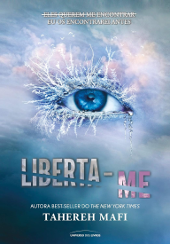
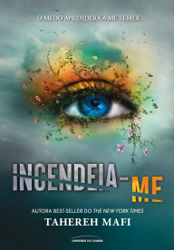
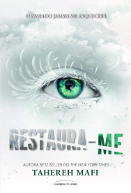
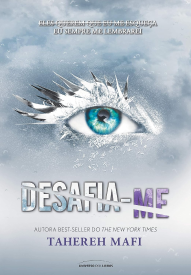
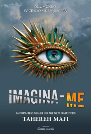
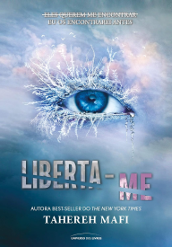
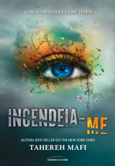
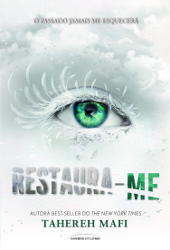
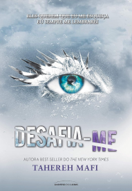
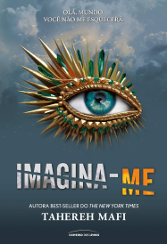
.png)

.png) 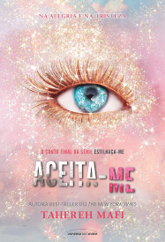
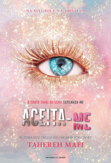
Tahereh Mafi é autora best-seller do The New York Times com a série Estilhaça-me, que foi publicada em 22 países e só no Brasil vendeu mais de 150 mil exemplares. Depois do estrondoso sucesso ao redor do mundo, a ABC Studios adquiriu os direitos da série e lançará uma adaptação para a TV.
Mafi também é autora dos livros Além da Magia e A Magia do Inverno, títulos que receberam diversos prêmios no gênero fantasia.
Curiosidade: Taehreh é casada com o também autor Ransom Riggs, conhecido por escrever O Lar da Sra. Peregrine para Crianças Peculiares.
(publicados no Brasil)


Este livro contém:

Uma grande leitora de fantasia não pode deixar a saga Estilhaça-me de lado!
Além de resenhista da Leitura da Meia-Noite, Suzana também produz nosso design,
deixando seus textos e o de outros colaboradores do melhor jeito para vocês, leitores.
Clique aqui para saber mais sobre.